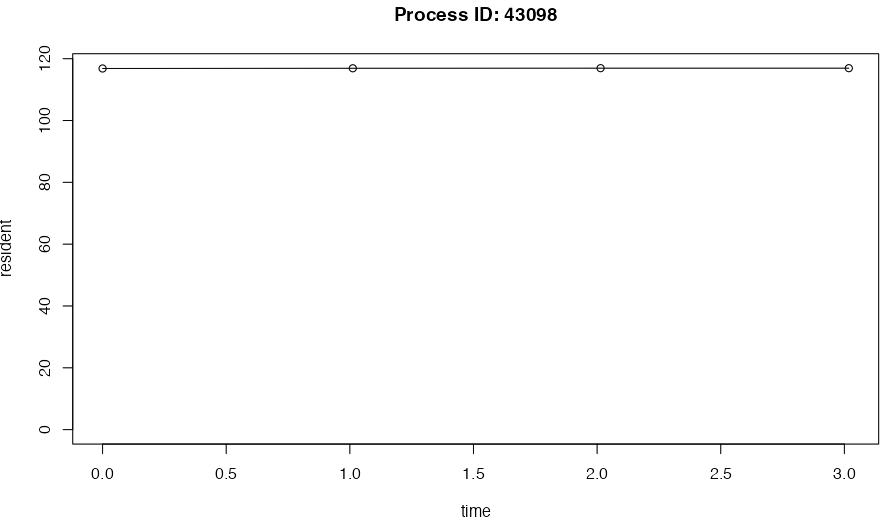

crew facilitates computationally demanding workloads
that consume a lot of memory and CPU resources, and workloads that
exhaust these resources may stall or crash. Oftentimes, a crash is
silent and there are no clues for troubleshooting. But if you
proactively monitor crew processes in log files, you can
keep track of resource usage and generated prospective data which is
useful in diagnosing problems. This vignette describes best practices
for logging.
Logging worker processes
Each launcher
plugin has its own way to turn on logging for workers. In the case
of the local plugin (crew_controller_local()), the
crew_options_local() has arguments to configure how
messages are written to log file, and each worker instance gets its own
log file in a directory you specify. Other plugins in packages such as
crew.cluster
and crew.aws.batch
have different arguments to configure platform-specific logging
mechanisms (e.g. SLURM logs or AWS CloudWatch logs). Example for the
local plugin:
library(crew)
log_directory <- tempfile()
controller <- crew_controller_local(
workers = 2,
options_local = crew_options_local(log_directory = log_directory)
)
controller$start()
controller$push(print("task 1"))
controller$push(print("task 2"))
controller$wait()
controller$terminate()
log_files <- list.files(log_directory, full.names = TRUE)
writeLines(readLines(log_files[1]))
#> R version 4.4.0 (2024-04-24)
#> ... # more session info...
#> [1] "task 1"
writeLines(readLines(log_files[2]))
#> R version 4.4.0 (2024-04-24)
#> ... # more session info...
#> [1] "task 2"To add resource metrics to existing log files, regardless of your
platform, use the options_metrics argument and set
path = "/dev/stdout".1
library(crew)
log_directory <- tempfile()
controller <- crew_controller_local(
name = "a",
workers = 2,
options_local = crew_options_local(log_directory = log_directory),
options_metrics = crew_options_metrics(
path = "/dev/stdout",
seconds_interval = 1
)
)
controller$start()
controller$push(
name = "task1",
command = {
Sys.sleep(2.5)
print("task 1")
Sys.sleep(2.5)
}
)
controller$push({
Sys.sleep(5)
print("task 2")
})
controller$wait()
controller$terminate()
log_files <- list.files(log_directory, full.names = TRUE)
writeLines(readLines(log_files[1]))
#> R version 4.4.0 (2024-04-24)
#> ... # more session info...
#> __AUTOMETRIC__|0.0.5.9001|61269|crew_worker_a_1_61f738a4efc23071f87a1697|0|1729624627.805|2.500|0.250|113688576|420894687232|task1|__AUTOMETRIC__
#> __AUTOMETRIC__|0.0.5.9001|61269|crew_worker_a_1_61f738a4efc23071f87a1697|0|1729624628.809|0.000|0.000|113721344|420903075840|task1|__AUTOMETRIC__
#> [1] "task 1"
#> __AUTOMETRIC__|0.0.5.9001|61269|crew_worker_a_1_61f738a4efc23071f87a1697|0|1729624629.815|0.000|0.000|113754112|420911464448|task1|__AUTOMETRIC__
#> __AUTOMETRIC__|0.0.5.9001|61269|crew_worker_a_1_61f738a4efc23071f87a1697|0|1729624630.818|0.000|0.000|113754112|420911464448|task1|__AUTOMETRIC__
#> __AUTOMETRIC__|0.0.5.9001|61269|crew_worker_a_1_61f738a4efc23071f87a1697|0|1729624631.818|0.000|0.000|113786880|420911464448|__DEFAULT__|__AUTOMETRIC__
writeLines(readLines(log_files[2]))
#> R version 4.4.0 (2024-04-24)
#> ... # more session info...
#> __AUTOMETRIC__|0.0.5.9001|61278|crew_worker_a_2_4d762c8805d675b1e1626a0e|0|1729624627.820|1.700|0.170|114835456|420760469504|unnamed_task_ef5ee3df7ae|__AUTOMETRIC__
#> __AUTOMETRIC__|0.0.5.9001|61278|crew_worker_a_2_4d762c8805d675b1e1626a0e|0|1729624628.821|0.000|0.000|114900992|420769906688|unnamed_task_ef5ee3df7ae|__AUTOMETRIC__
#> __AUTOMETRIC__|0.0.5.9001|61278|crew_worker_a_2_4d762c8805d675b1e1626a0e|0|1729624629.826|0.000|0.000|114900992|420769906688|unnamed_task_ef5ee3df7ae|__AUTOMETRIC__
#> __AUTOMETRIC__|0.0.5.9001|61278|crew_worker_a_2_4d762c8805d675b1e1626a0e|0|1729624630.828|0.000|0.000|114900992|420769906688|unnamed_task_ef5ee3df7ae|__AUTOMETRIC__
#> [1] "task 2"The lines with __AUTOMETRIC__ record resource usage
metrics over the life cycle of each worker. Use autometric::log_read()
to read these metrics and autometric::log_plot()
to visualize them. Below, the time column is elapsed time
in seconds since logging began, and resident is memory
usage in megabytes. The phase column shows which task was
running at the time the log was recorded. A phase of
__DEFAULT__ means the worker was idle (not running a task).
More details are at autometric::log_read().
data <- autometric::log_read(log_directory)
data$name <- substr(data$name, 0, 20)
data
#> version phase pid name status time core cpu resident virtual
#> 1 0.0.5.9001 task1 61269 crew_worker_a_1_61f7 0 0.000 2.5 0.25 113.6886 420894.7
#> 2 0.0.5.9001 task1 61269 crew_worker_a_1_61f7 0 1.004 0.0 0.00 113.7213 420903.1
#> 3 0.0.5.9001 task1 61269 crew_worker_a_1_61f7 0 2.010 0.0 0.00 113.7541 420911.5
#> 4 0.0.5.9001 task1 61269 crew_worker_a_1_61f7 0 3.013 0.0 0.00 113.7541 420911.5
#> 5 0.0.5.9001 __DEFAULT__ 61269 crew_worker_a_1_61f7 0 4.013 0.0 0.00 113.7869 420911.5
#> 6 0.0.5.9001 unnamed_task_ef5ee3df7ae 61278 crew_worker_a_2_4d76 0 0.000 1.7 0.17 114.8355 420760.5
#> 7 0.0.5.9001 unnamed_task_ef5ee3df7ae 61278 crew_worker_a_2_4d76 0 1.001 0.0 0.00 114.9010 420769.9
#> 8 0.0.5.9001 unnamed_task_ef5ee3df7ae 61278 crew_worker_a_2_4d76 0 2.006 0.0 0.00 114.9010 420769.9
#> 9 0.0.5.9001 unnamed_task_ef5ee3df7ae 61278 crew_worker_a_2_4d76 0 3.008 0.0 0.00 114.9010 420769.9
autometric::log_plot(data, pid = 43098, metric = "resident")
In targets
As explained at https://books.ropensci.org/targets/crew.html,
crew helps targets orchestrate pipelines. In
addition to the crew workers above, targets
has its own central process for managing the pipeline. To monitor this
central process, simply write if (tar_active()) log_start()
in _targets.R. This will write a separate file to record
the resource usage statistics of the central process. Example:
library(autometric)
library(crew)
library(targets)
library(tarchetypes)
tar_option_set(
controller = crew_controller_local(
workers = 2,
options_metrics = crew_options_metrics(
path = "worker_log_directory/", # Worker logs live here.
seconds_interval = 1
)
)
)
if (tar_active()) {
log_start(
path = "main_process.txt", # Statistics on the main process go here.
seconds = 1
)
}
list(
tar_target(name = sleep1, command = Sys.sleep(5)),
tar_target(name = sleep2, command = Sys.sleep(5))
)